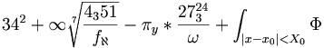

De: La Frikipedia, la enciclopedia extremadamente seria.
De: La Frikipedia, la enciclopedia extremadamente seria. De: La Frikipedia, la enciclopedia extremadamente seria.
| De la serie sitios web de ayer y de hoy: | |||
| Desmotivaciones | |||
| |||
| Dirección: | [No entrar, peligro de depresión] | ||
| Se dedica a: | Terminar con nuestras esperanzas e ilusiones | ||
| País de origen: | Espiña | ||
| Año de fundición: | Febrero de 2010 | ||
| Propietario: | Walt_k (aka Gato Serio) | ||
| Creador: | El mismo de arriba | ||
| Estado actual: | Lleno de emos | ||
«No sabía que no tenía piernas hasta que desperté y vi en el monitor la página desmotivaciones»
~ Oliver Atom recordando que es un inválido
«Creía que tenía un gato robot del futuro, pero desmotivaciones me mostró que todo fue producto de la droga»
~ Nobita convencido de que es un perdedor
Desmotivaciones.es es una secta que intenta hacernos reflexionar sobre los hechos más fehacientes y trágicos de nuestras patéticas existencias, fracasando totalmente. Está diseñada exclusivamente para las horas de maricona y depresión. Se encarga de fomentar nuestro odio hacia los emos, producto de sus imágenes fatídicas con complejo de un libro de tragedia que le causarían repulsión depresión incluso a Martin Luther King. Sus imágenes están encerradas en un marco negro y profundo con unas letras blancas describiendo la imagen, lo que se le llama carteles aunque nadie colgaría una mierda de esas en ningún sitio.
La página nació un día gris de febrero en el cual, el señor Walt _K terminó con su novia, que lo dejo por otro y cayó en cuenta que su vida no valía la pena y que era un pinche gordo que pagaba por usar windows se dedicó a arruinarnos las nuestras con imágenes motivantes pesadas y comentarios sarcásticos.
Como se mencionó anteriormente la página fue creada para que Walt_k pudiera controlar nuestras mentes no se sintiera tan solo en su dolor, y a raíz de eso se auto-considerara pro por crear una página tan emocionante y poder sentir que es parte de un mundo cargado de súbditos anormales. Claro que como todos sabemos los usuarios desmotivados son un montón de retardados deprimidos que viven con sus padres a los 45, pero no pretendemos arruinar la poca ilusión que le queda al responsable de la página, según su médico tratante el Dr. House puede ocasionarle un fuerte shock emocional y posteriormente una etapa de autismo.
Pero a pesar de todo sus males, Desmotivaciones.es, es una página recomendable, y cargado de mierda diversión.
Debajo del logo, en el que siempre sale el mismo gato mirándote cómo si estuvieras haciéndole un cunnilingus a un ornitorrinco, hay cinco extrañas pestañitas en las que si clicas salen cosas. ¿Que que tipo de cosas? Tranquilo, impaciente lector, aquí estoy yo para resolver sus impertinentes dudas.
Lugar en el que todos los carteles favoritos de Walt_k se encuentran y hacen una orgía ensordecedora que despierta a su vecino Sube, que suele vengarse subiendo más carteles o defecandose en la más ilustrísima de las meretrices. Para un desmotivador tener un cartel en esta sección es como el nirvana para un budista o los unicornios negros fosforitos para un adicto al LSD. Osease: la meta. El método de selección de carteles es el siguiente:
Es el botón más clicado por emos, n00bs y demás fauna extraterrestre. Aquí los usuarios suben sus carteles, y los otros usuarios los votan. Todas las aberraciones existentes en esta página han sido creadas por ese maligno botón. Sus delitos por homicidio imprudente (al causar el suicidio de miles de personas entre las que estan en las citas de arriba) ascienden a .
Los carteles con más cosas se encuentran aquí, ya pueden ser por por votos, por comentarios o por favoritos o por gilipollas. También se ve aquí la clasificación de usuarios, en la que aparecen los mayores desmotivadores, dado a sus comentarios, carteles, o trolleo a base de negativos.
Este botón elige al cartel más patético de todos entre los que están en la página, que están guardados en la larga cola de Walt_k.
Extremidad trasera del felino creador, en ella se guardan 4.000.000 de carteles. Cuando iba por 500.000, la cola de Walt_k explotó, siendo ingresado en un veterinario y sustituido por Longcat
Igual que no hay personas iguales, tampoco hay usuarios de Desmo iguales, a cada cual más emo y subnormal. Se puede distinguir distintos tipos de fauna extraña, y no te preocupes si los atropellas por la carretera, habrás hecho un favor para la humanidad
Como su propio color indica, están muy verdes. Son los usuarios principiantes, que se rebajan a lamer el piso por el que camina Walt_k. Si eres verde en Desmotivaciones, suicídate. No se puede ser tan tonto para no superar a esa panda de depresivos seres. Es más, si eres verde, golpe de remo. Es el equivalente aquí, en el mundo normal, a ser en el grano del trasero de alguien.
Esta gente empieza a volverse emo, sube 2 carteles al día, pero de ser posible, subirían 1000 toneladas de basura al día. Aún así, los usuarios naranjas son un inútil desecho de la sociedad no logran principal. Esto es como ser junior aquí, aunque si un desmotivador entra aquí suele salir apaleado por una manada de wombats.
Y no, no son comunistas(Algunos sí y con orgullo). Estos seres empiezan a digievolucionar en criauturas subhumanas y desagradables. La mayoría empieza a comprarse hojas de afeitar, pero no para ese cometido. Los usuarios rojos pueden subir 3 carteles al día gran cosa, denunciar carteles y comentarios que incluyen apoyo a los alcoholicos, Justin Biegayber, y otras cosas que a la mayoria de los usuarios no le agrada. El usuario número 1 hasta ahora es un putazo sin vida y el esclavo sexual de Walt_k.
También llamados admins, o Walt_k y otro tío que no se mete. Una página llena de emos como esa no puede tener un solo admin.. ¿Quién limpia las manchas de sangre de la pared que queda al cortarse las venas? ¿Y los charcos de vómito irisado que desprenden la gente normal al ver un cartel cursi?
También llamado Usuario Bloqueado, baneado o IP anónima. Aquí se arrecuentan los trolls (pero malos, de los que le dan negativo a todo y se creen muy malotes por ello), membrillos, beliebers y muchas más especies en investigación.
Se pueden mencionar miles de cosas acerca de ellos, sin embargo la mejor frase que resume todas sus cualidades es; montón de basura inservible. La página también causa distintos efectos en el lector, por ejemplo, rabia, deseos de causar un genocidio (los científicos lo plantean como una posible causa que alentó el holocausto), depresión y en la etapa final terminas convirtiendote en gay (aka: creador de carteles desmotivacionales)
Son los carteles para los que se hizo la página. Llenos de mensajes filosóficos copiados de Taringa, nos influencian con mensajes tan trágicos que promueven el suicidio, la eutanasia y la perforación intravenal. Suelen ser los más fáciles de hacer, pues copias una frase de internet o le pides consejo a un indigente.
Son ese tipo de carteles que nacen a raíz de una borrachera en el que se te ocurre cualquier gilipollez y decides hacer un cartel desmotivacional sobre esa tremenda ocurrencia tuya.
Es el tipo cartel de un usuario extremista. Y con eso quiere decir que cada vez que se ve un cartel de ese tipo es que el lector piense "Espero que eso fuera un burdo intento de trolleo. O eso, o eres más corto que las mangas de un chaleco". El máximo exponente es este usuario
Carteles que hablan de estupideces pensadas por un nacional anarcosindilista-fachocomunista republicanamentemonarquico ateocatolicista-protestantebudista política. Normalmente tienen varios negativos.
Suelen ser carteles, algunos, de fachas, alabando a franco, ya sabemos que a walt le pone este, ademas de Aznar, lo peor de todo es que si subes un cartel mostrando apoyo a algun preso politico te lo borran, o de ideologia que no sea facha ultra derecha
Son ese tipo de carteles tan repelentes y amorosos que dan ganas de echar todos tus órganos internos acompañados de tu último desayuno. Suelen hacerse por chonis para luego colgarlas en el Tuenti y esperar a que sus reshulonas amigas les llenen el tablón de comentarios como: Aiiiiishhhh, qe caaarteel máás monooosooooo¡¡¡¡ Telove, chocho ;), que suelen ser peores que los carteles en sí. Cada vez que me encuentro un cartel de este tipo me dan ganas de darme con un palo de clavos en la cabeza, en vez de eso prendo el ordenador con fuego
Estos son los generalmente más votados en esta página. Si te quieres asegurar principal, sube un cartel de este tipo. Todos los usuarios te felicitarán, y te llenarán de votos negativos y favoritos.
Estos carteles generalmente, le gustarán a walt_k ya que como sabemos siempre tuvo fantasias sexuales con éste.
Si estas registrado en la página, y quieres que todos te consideren la leche, tienes que:
*no nos hacemos responsables por presuntos baneos*
Autor(es):